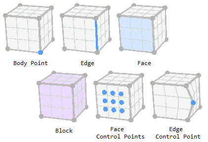
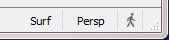
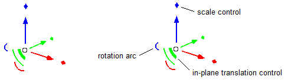
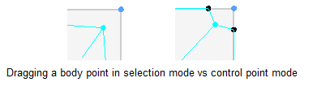
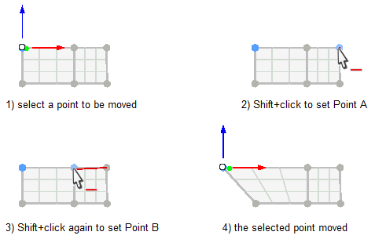
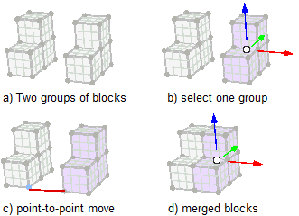
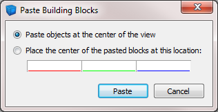

对象的选择和操纵
工具栏中的选择工具可用于选择对象并移动它们。
可以选择以下对象。这里区分“体点”（位于棱边端部的点）与“控制点”（塑造面或棱边形状的点）。

单击对象即可将其选中。按住 Control 单击可从多项选择中添加或移除对象。
选择块体不是简单单击一下就能完成的。您可以选中一个或多个面，然后按“B”键将面选择转换为块体选择。或者右键单击某个面（无论是否选中），然后从上下文菜单中选择命令：“选择块体”或“由面选择块体”。
当您右键单击已指定分组的块体时，上下文菜单中将有一个名为“选择分组中的块体：<name>”的命令，其中 <name> 会替换为实际的分组名称。该命令将首先显示所有指定了该分组的块体，然后选中所有这些块体。
选中对象后，该对象会成为“种子”选择，这意味着当您向多项选择中添加更多对象时，只能添加同一类种子类型的对象。例如，您可以选中多个点，但不能同时选中点和棱边。
命令可用于选中当前种子类型的所有对象。对于控制点而言，这意味着当已经选中一个或多个控制点时，同一棱边或同一面上的其余所有控制点都会被选中。
选择模式是鼠标的默认模式。在操作过程中按 ESC 键应取消该操作并使鼠标回到此模式。
选择矩形
可以绘制选择矩形来将多个对象添加到选择中。（按下鼠标按钮，拖动，然后松开。）例如，在进行点的多项选择时，通常先单击一个点以选中它并将其作为种子选择。然后绘制一个选择矩形以选中更多同一类型的对象。
在使用 Control 键配合选择矩形时，会反转矩形内对象的选择状态。
使用 Shift 键时，选择矩形只会向当前选择中添加对象。
要使用 Shift 键绘制选择矩形，矩形必须从空白的未使用区域开始。而使用 Control 键时，矩形可以从空白区域开始，也可以从块体的某个未选中面开始。
选择矩形可用于上述任何对象类型，但控制点除外。
表面与深部模式、平行与透视模式
状态栏中有 2 个按钮会影响选择矩形的工作方式。

Surf/Deep 按钮在表面选择和深部选择之间切换。使用表面选择时，选择矩形只选中显示中可见的对象——对象必须在选择矩形内至少有一个可见像素才会被选中。深部选择则使选择矩形表现得如同被投射到模型深处，该投影范围内的对象无论是否在屏幕上可见都会被选中。
Persp/Parallel 按钮改变模型渲染到屏幕上的方式，在平行投影和透视投影之间切换。这会影响选择矩形选中哪些对象，但仅在深部选择生效时才如此。
这两个设置也可在控件组中使用。表面/深部设置位于视图控件组中，而透视/平行设置位于视图统计控件组中。
大多数情况下，这些按钮被设置为“深部和平行”或“表面和透视”。
操纵对象
当您在未选中的点、棱边或控制点上按下鼠标按钮并拖动该对象时，您执行的是自由平移，即在与屏幕平行的平面内拖动该对象。松开鼠标按钮即完成拖动。在左键仍按住时按鼠标右键将取消拖动。
选中对象后，会出现一组坐标轴。这些轴及相关控件统称为操纵柄。您可以拖动操纵柄的中心点，以执行与在未选中对象上相同的自由平移。
自由平移也可以通过拖动选中的对象来完成。
操纵柄的组成部分包括旋转弧、缩放控件和面内平移控件。

可以使用操纵柄中心点上的上下文菜单来显示或隐藏缩放、旋转和面内平移控件。
中心点也称为参考点，它与对象属性控件组中所见的参考点是同一个点。在控件组中，您可以输入坐标来改变操纵柄的位置，其效果是移动整个选择。“参考点”下的“偏移”字段可让您沿一个或多个轴移动所选对象。
您可以拖动某个轴，以沿该轴的方向移动当前所选对象。
仅单击某个轴就会显示一个编辑字段，您可以在其中输入沿该轴的新位置或偏移。
在块体构建窗格具有输入焦点且操纵柄可见时，按 Tab 键会将输入焦点移到对象属性控件组中的“参考点”编辑字段（假设对象属性控件组已打开）。在那里您可以输入新坐标。
操纵柄的中心点是对象旋转或缩放所围绕的点。您可以单击旋转或缩放控件以显示可输入精确值的编辑字段，也可以用鼠标拖动该控件。
缩放控件通常沿一个轴工作，但如果您在缩放控件上按下鼠标按钮，然后按住 Shift 键拖动，就可以进行三维缩放。三维缩放也可以通过单击缩放控件调出编辑字段，然后在按 Enter 时按住 Shift 键来完成。
要在不移动所选对象的情况下重新定位操纵柄，您可以按住 Alt 拖动中心点，或使用中心点上的上下文菜单并选择“将操纵柄移至…”命令。“重置位置”命令会将操纵柄移回其默认位置。
有一种称为一维捕捉的技术：您先做出选择，然后开始拖动某个轴以沿单一轴移动所选对象，接着按住 Shift 键。当鼠标位于捕捉位置上时，Shift 键会高亮显示该位置。如果您将鼠标移到该捕捉位置并松开，操纵柄将沿该轴移动到与高亮对象对应的位置，当前所选对象也将移动相同的量。捕捉位置包括体点、几何数据集中的点，以及投影到几何数据集中多边形上的点。
在对象属性控件组中，“缩放”行使用操纵柄的当前位置。选中的对象将按照为各轴指定的值，相对于操纵柄的位置进行缩放。
- 进行旋转时，可以使用现有的棱边指定旋转轴：
- 选中具有正确旋转轴的棱边；
- 在对象属性控件组中，在旋转行上单击按钮，以从所选棱边复制该轴；
- 选中要旋转的对象；
- 使用 Alt 键将操纵柄重新定位到旋转中心；
- 在控件组中输入旋转角度。
镜像（将所选块体变为其镜像）可以使用对象属性（Object Properties）控件组中的控件完成。典型的工作流程是：复制一些块体，将它们粘贴到空白区域，保持其选中状态，然后单击 X、Y 或 Z 轴的按钮以沿该轴镜像块体。仅当所选块体未与其他块体附着时，X、Y 和 Z 控件才可用。
移动体点与移动棱边控制点的区别
移动体点时，选择工具的工作方式与控制点工具略有不同。使用选择工具时，移动体点会使棱边控制点随所附着的棱边一起移动。而控制点工具移动体点时，棱边控制点会保持在原处，但这仅在您只移动棱边两个端点之一时成立。

点到点移动
- 选择工具和控制点工具都允许点到点移动：
- 选中一个或多个对象，
- 按住 Shift 单击任意点，将其标记为点 A，
- 按住 Shift 单击任意其他点，使其成为点 B。
- 所选对象将按点 A 到点 B 的移动所指示的方向和距离移动。

（不要拖动鼠标。按住 Shift 单击点 A 并松开鼠标按钮，然后按住 Shift 单击点 B。）
设置点 A 后会显示不同的鼠标指针（）。即使未按住 Shift 键，它也会显示，以提醒您已指定了点 A。
沿任意轴移动
虽然没有专门用于沿任意轴平移的工具，但有一种变通方法。您可以使用上下文菜单创建一个任意大小的自由块体，然后沿任意方向旋转该块体，从而获得朝向任意方向的棱边。然后选中要平移的对象，并使用点到点移动使所选对象沿某条棱边所定义的轴移动。
合并点
您可以通过将一个未选中的点拖到另一个点来合并两个点，也可以使用点到点移动将单个选中的点移动到另一个点。如果合并成功，合并后各点的棱边会短暂地以青色（浅蓝色）高亮显示。
点到点移动可用于在一次操作中合并多个点。如果您已知两组块体应当拼合在一起，可以选中其中一组，并通过合并两个相匹配的点来合并这些块体：

使用此技术合并多个点时，程序会自动使用状态栏中显示的“视图容差”设置。
复制和粘贴
块体可以在同一集合内复制粘贴，也可以从一个集合复制到另一个集合。选中一个或多个块体后，命令将变为可用，您可以复制这些块体（前提是您已先保存项目）。当您选择命令时，将看到一个询问将块体粘贴到何处的对话框。

您可以将块体粘贴到视图中心，也可以为块体集合的中心指定 x、y 和 z 坐标。
将复制和粘贴命令与导入、导出块体集合的功能结合使用时，您可以保存自己喜欢的形状集合，加载某个集合，然后将这些形状复制并粘贴到新的集合中。
| 这些内容对您有帮助吗？… 版权与免责声明 | FLAC3D © 2019, Itasca | 原文更新于 2020 年 10 月 8 日 |